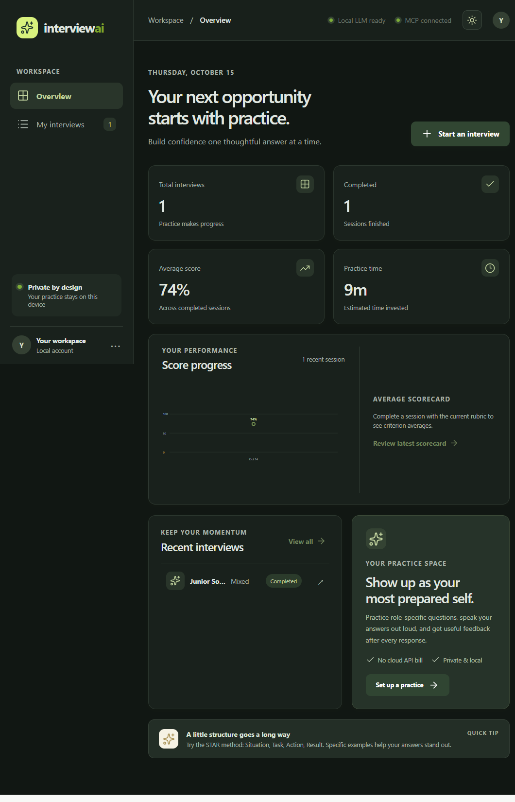
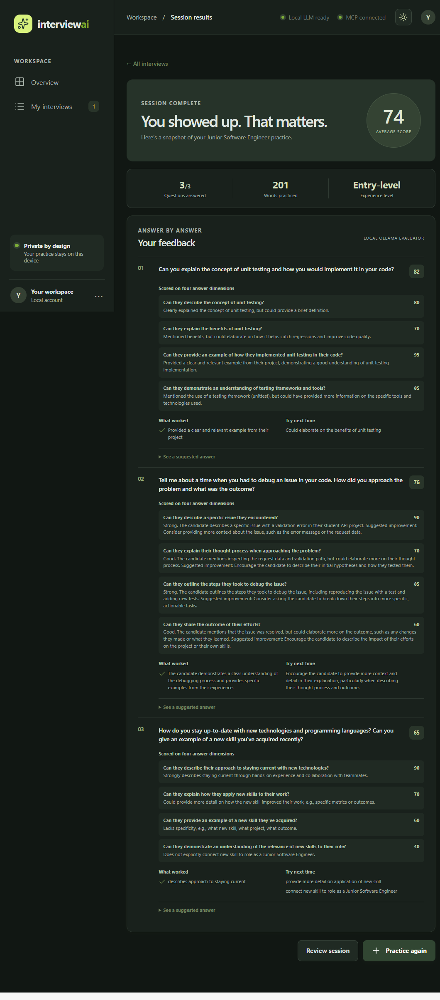

Use the role, experience level, interview style, resume skills, and job requirements to ground each question set.
A local-first interview practice coach
Practice with confidence.
Turn a target role and job description into a focused mock interview. Practice out loud or by typing, then get structured feedback and a scorecard—without sending your resume to a paid AI API.

Built for complete practice sessions
From job description to useful feedback.
A working full-stack application with persistent interview history, local document processing, AI-generated questions, speech transcription, and a progress dashboard.
Review relevance, completeness, clarity, and technical accuracy alongside evidence, strengths, and specific next steps.
Speak responses with browser recording and local Faster-Whisper transcription, or use the text editor.
Store sessions and feedback in SQLite, revisit results, and compare recent completed-session scores.
Connect FastAPI to Ollama and project MCP tools on the same machine; no paid AI API key is required.
Validate document types and sizes, report damaged or scanned PDFs, and return actionable API errors.
A look inside
A focused workspace, detailed feedback.

Local-first by default
Your practice data stays on your device.
The interactive application runs locally with Ollama, a local SQLite database, and a project MCP subprocess. This static portfolio contains only project information and screenshots; it does not collect candidate resumes, answers, or microphone recordings.
To run the full application, follow the setup instructions in the repository README. Public hosting of the interactive app is intentionally not enabled.